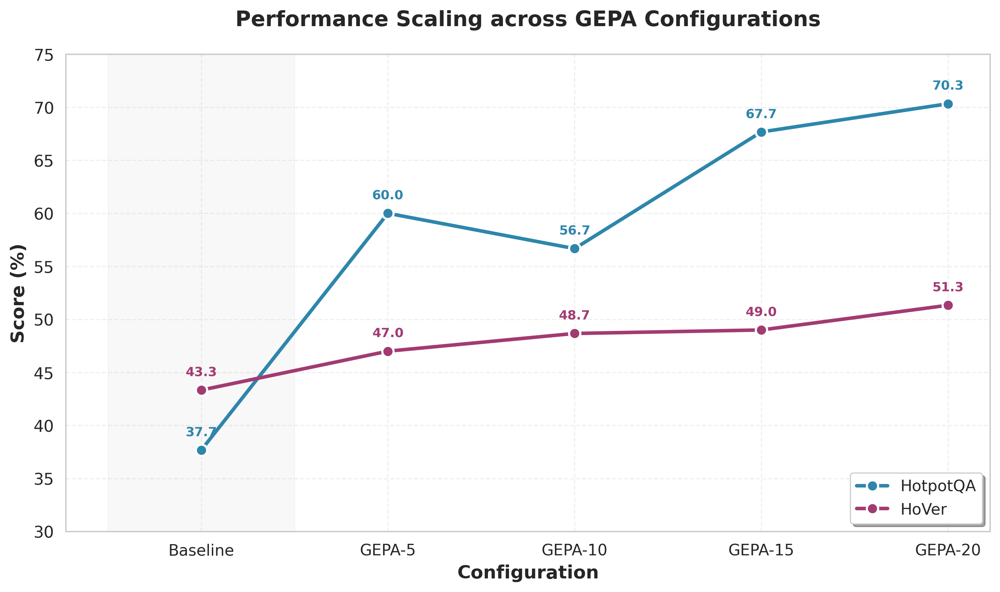

Week 1
1. Background and Objective¶
- We aim to compare self-evolving/self-optimizing systems (GEPA, ACE) under different levels of inner-loop search/evaluation intensity, focusing on their performance–cost–compute scaling behavior.
- The key question: how should we define the horizontal axis for scaling?
- Initial candidates:
- Number of rollouts
- Number of iterations
- Token usage
- Total cost (USD)
2. Current GEPA Experiments and Key Findings¶
Model and Configurations: gpt-4o-mini with configurations — Baseline, GEPA-5, GEPA-10, GEPA-15, GEPA-20
Evaluation Datasets: HotpotQA, HoVer (consistent with default script settings)

Cost Scaling¶

Performance-Cost Tradeoff¶

Conclusions¶
-
Costs remain roughly constant while performance improves with more iterations.
-
GEPA-10/15/20 show similar API spending, but performance continues to increase.
- The number of external API calls increases, but total output tokens do not rise significantly.
- Iteration count could be a candidate, but its definition varies across frameworks.
-
The GEPA paper uses rollouts as its metric, but rollout semantics differ by architecture or task.
-
Number of metric evaluations may serve as a better scaling indicator. For example:
def one_metric_call(program, example):
output = program(example.question) # may internally call GPT 2–3 times
# Step 2: Evaluate the result (possibly another GPT API call)
score = metric_fn(example, output) # may call GPT once more
return score # counted as 1 metric call
3. Current Issue¶
At present, I’m encountering a resource access issue on the Helios4 cluster.
It appears that the nodes are continuously occupied by other lab members, making it extremely difficult to find an available time slot for running experiments.
Currently, the experiments on the two benchmarks are being conducted using my personal OpenAI API key, but this setup is not sustainable for continued large-scale experimentation.
Therefore, I would like to ask:
- Whether it's possible to grant access to additional compute nodes, or
- If there exists a dashboard or monitoring tool to better visualize GPU availability and idle times.
Adam kindly provided me with access credentials for Helios3, but for some reason, I still haven’t been able to log in successfully.
He might be quite busy these days, so the issue hasn’t been resolved yet.